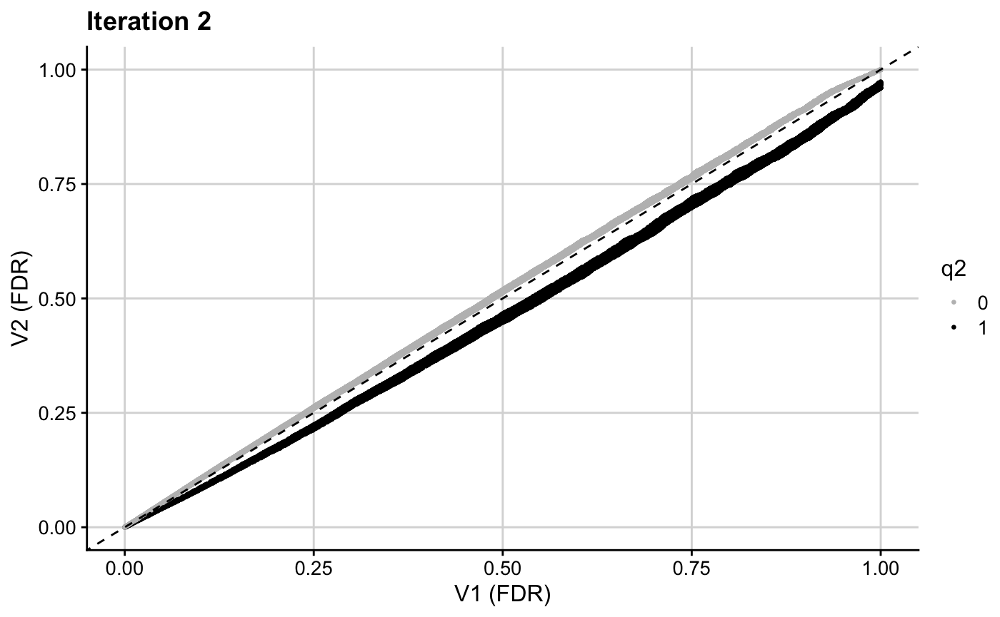

T1D Application
t1d_app.RmdIn this vignette, we walk through an example to illustrate how the fcfdr R package can be used to leverage various relevant genetic and genomic data with GWAS \(p\)-values for type 1 diabetes (T1D) to find new genetic associations. This vignette will take approximately 30 minutes to complete.
The data required for this example is available to download within the fcfdr R package and includes:
GWAS \(p\)-values for T1D (Onengut-Gumuscu et al. 2015) downloaded from the NHGRI-EBI GWAS Catalog (study GCST005536 accessed on 08/10/21).
GWAS \(p\)-values for rheumatoid arthritis (RA) (Eyre et al. 2012) downloaded from the NHGRI-EBI GWAS Catalog (study GCST90013445 accessed on 08/10/21).
Binary measure of SNP overlap with regulatory factor binding sites, derived from merging all DNaseI digital genomic footprinting (DGF) regions from the narrow-peak classifications across 57 cell types (see https://www.nature.com/articles/nature11247). SNP annotations were downloaded for all 1000 Genomes phase 3 SNPs from the LDSC data repository and the binary
DGF_ENCODEannotation was extracted for all SNPs in our analysis.Average fold-enrichment ratios of H3K27ac ChIP-seq counts relative to expected background counts in T1D-relevant cell types. Fold-enrichment ratios were downloaded from NIH Roadmap for CD3, CD4+ CD25int CD127+ Tmem, CD4+ CD25+ CD127- Treg, CD4+ CD25- Th, CD4+ CD25- CD45RA+, CD4 memory, CD4 naive, CD8 memory and CD8 naive primary cells (from https://egg2.wustl.edu/roadmap/data/byFileType/signal/consolidated/macs2signal/foldChange/ see epigenome ID to cell type conversion table here). The fold-enrichment ratios were averaged over cell types to derive the values in column
H3K27ac.
Firstly, we download the data:
set.seed(1)
library(fcfdr)
library(cowplot)
library(ggplot2)
library(dplyr)
#>
#> Attaching package: 'dplyr'
#> The following objects are masked from 'package:stats':
#>
#> filter, lag
#> The following objects are masked from 'package:base':
#>
#> intersect, setdiff, setequal, union
data(T1D_application_data, package = "fcfdr")
head(T1D_application_data)
#> rsID CHR19 BP19 REF ALT T1D_pval MAF LDAK_weight RA_pval
#> 1: rs61733845 1 1118275 C T 0.10475578 0.0353535 0.896405 0.3552
#> 2: rs9729550 1 1135242 A C 0.06329083 0.2575760 0.424584 0.1089
#> 3: rs6603788 1 1218086 C T 0.12616240 0.0656566 0.497992 0.3700
#> 4: rs1240708 1 1335790 A G 0.24334501 0.1464650 0.712747 0.6963
#> 5: rs880051 1 1493727 C T 0.29581294 0.2121210 NA 0.5926
#> 6: rs2296716 1 1497824 G A 0.49740945 0.1161620 NA 0.3080
#> DGF H3K27ac
#> 1: 0 0.1235078
#> 2: 0 2.0741089
#> 3: 1 0.1636556
#> 4: 0 8.5169011
#> 5: 0 0.7284344
#> 6: 0 0.5411567In this application we leverage GWAS \(p\)-values for RA, binary SNP overlap with regulatory factor binding sites and H3K27ac counts in T1D-relevant cell types with GWAS \(p\)-values for T1D to generate adjusted \(p\)-values (called \(v\)-values).
orig_p <- T1D_application_data$T1D_pval
chr <- T1D_application_data$CHR19
MAF <- T1D_application_data$MAF
q1 <- T1D_application_data$RA_pval
q2 <- T1D_application_data$DGF
q3 <- log(T1D_application_data$H3K27ac+1) # deal with long tailThe data frame also contains a column of LDAK weights for each SNP (https://dougspeed.com/calculate-weightings/). An LDAK weight of zero means that the signal is (almost) perfectly captured by neighbouring SNPs, and so we use the subset of SNPs with non-zero LDAK weights as our independent subset of SNPs.
ind_snps <- which(T1D_application_data$LDAK_weight != 0)We are now ready to use the fcfdr R package to generate \(v\)-values. Firstly, we generate \(v\)-values by leveraging GWAS \(p\)-values for RA. We supply MAF values to prevent a bias of the KDE fit towards the behaviour of rarer SNPs (the function intrinsically down-samples the independent subset of SNPs to match the MAF distribution in this subset to that in the whole set of SNPs).
iter1_res <- flexible_cfdr(p = orig_p,
q = q1,
indep_index = ind_snps,
maf = MAF)
v1 <- iter1_res[[1]]$vSince the outputted \(v\)-values are analogous to \(p\)-values, they can be used directly in any error-rate controlling procedure. Here, we use the Benjamini-Hochberg (BH) procedure to derive FDR-adjusted \(v\)-values and plot the resultant FDR values.
res1 <- data.frame(p = orig_p, q1, v1)
mid1 <- median(res1$q1)
ggplot(res1, aes(x = p.adjust(p, method = "BH"), y = p.adjust(v1, method = "BH"), col = q1)) + geom_point(cex = 0.5) + theme_cowplot(12) + background_grid(major = "xy", minor = "none") + geom_abline(intercept = 0, slope = 1, linetype="dashed") + xlab("Original FDR") + ylab("V1 (FDR)") + ggtitle(paste0("Iteration 1")) + scale_color_gradient2(midpoint = mid1, low = "blue", mid = "white", high = "red", space = "Lab")The resultant \(v\)-values for this first iteration (v1) are then used in the next iteration to leverage binary data on SNP overlap with regulatory factor binding sites. Note that the binary cFDR function implements a leave-one-out procedure and therefore requires a group index for each SNP. This will generally be the chromosome on which that SNP resides but can also be indices relating to LD blocks, for example.
iter2_res <- binary_cfdr(p = v1,
q = q2,
group = chr)
v2 <- iter2_res$v
res2 <- data.frame(p = v1, v2, q2)
res2$q2 <- as.factor(res2$q2)
ggplot(res2, aes(x = p.adjust(p, method = "BH"), y = p.adjust(v2, method = "BH"), col = q2)) + geom_point(cex = 0.5) + theme_cowplot(12) + background_grid(major = "xy", minor = "none") + geom_abline(intercept = 0, slope = 1, linetype="dashed") + xlab("V1 (FDR)") + ylab("V2 (FDR)") + ggtitle(paste0("Iteration 2")) + scale_colour_manual(values = c("grey", "black"))
The resultant \(v\)-values for this second iteration (v2) are then used in the next iteration to leverage H3K27ac counts.
iter3_res <- flexible_cfdr(p = v2,
q = q3,
indep_index = ind_snps,
maf = MAF)
v3 <- iter3_res[[1]]$v
res3 <- data.frame(p = v2, q3, v3)
ggplot(res3, aes(x = p.adjust(p, method = "BH"), y = p.adjust(v3, method = "BH"), col = q3)) + geom_point(cex = 0.5) + theme_cowplot(12) + background_grid(major = "xy", minor = "none") + geom_abline(intercept = 0, slope = 1, linetype="dashed") + xlab("V2 (FDR)") + ylab("V3 (FDR)") + ggtitle(paste0("Iteration 3")) + scale_color_gradient2(midpoint = 1, low = "blue", mid = "white", high = "red", space = "Lab")
We then create a final data frame containing the results from our analysis. Note that the sign is flipped for \(q2\) and \(q3\). This is because these are negatively correlated with p and the flexible cFDR software automatically flips the sign of q to ensure that low p are enriched for low q.
res <- data.frame(orig_p, q1 = iter1_res[[1]]$q, q2 = as.factor(iter2_res$q), q3 = iter3_res[[1]]$q, v1, v2, v3)
head(res)
#> orig_p q1 q2 q3 v1 v2 v3
#> 1 0.10475578 0.3552 0 -0.1164557 0.11041697 0.11954673 0.16859959
#> 2 0.06329083 0.1089 0 -1.1230151 0.04303016 0.04694678 0.02489003
#> 3 0.12616240 0.3700 1 -0.1515664 0.13365968 0.10697783 0.15200257
#> 4 0.24334501 0.6963 0 -2.2530693 0.29820649 0.31778969 0.20141455
#> 5 0.29581294 0.5926 0 -0.5472161 0.34568571 0.36935209 0.34426404
#> 6 0.49740945 0.3080 0 -0.4325332 0.48752645 0.52420509 0.55702564We can plot the original \(p\)-values for T1D against the final adjusted \(v\)-values.
mid1 <- median(res$q1)
ggplot(res, aes(x = p.adjust(orig_p, method = "BH"), y = p.adjust(v3, method = "BH"))) + geom_point(cex = 0.5, alpha = 0.5) + theme_cowplot(12) + background_grid(major = "xy", minor = "none") + geom_abline(intercept = 0, slope = 1, linetype="dashed", col = "red") + xlab("Original P (FDR)") + ylab("V3 (FDR)") + ggtitle(paste0("FDR adjusted v-values\nagainst original FDR values"))
ggplot(res, aes(x = -log10(orig_p), y = -log10(v3))) + geom_point(cex = 0.5, alpha = 0.5) + theme_cowplot(12) + background_grid(major = "xy", minor = "none") + geom_abline(intercept = 0, slope = 1, linetype="dashed", col = "red") + xlab("Original P (FDR) (-log10)") + ylab("V3 (FDR) (-log10)") + ggtitle(paste0("FDR adjusted v-values against\noriginal FDR values (FDR)")) + coord_cartesian(ylim = c(0,10), xlim = c(0,10))We find that our implementation of cFDR identifies newly FDR significant SNPs that have relatively small GWAS \(p\)-values for rheumatoid arthritis, are more likely to be found in genomic regions where regulatory factors bind and have relatively high H3K27ac counts in T1D relevant cell types.
p_fdr <- p.adjust(orig_p, method = "BH")
v3_fdr <- p.adjust(v3, method = "BH")
# choose fdr threshold corresponding to genome-wide significance threshold
fdr_thr <- max(p_fdr[which(orig_p <= 5*10^{-8})])
median(T1D_application_data$RA_p[which(v3_fdr < fdr_thr & p_fdr > fdr_thr)])
#> [1] 0.00714
median(T1D_application_data$RA_p)
#> [1] 0.4222
mean(T1D_application_data$DGF[which(v3_fdr < fdr_thr & p_fdr > fdr_thr)])
#> [1] 0.4059406
mean(T1D_application_data$DGF)
#> [1] 0.2339995
median(T1D_application_data$H3K27ac[which(v3_fdr < fdr_thr & p_fdr > fdr_thr)])
#> [1] 1.441599
median(T1D_application_data$H3K27ac)
#> [1] 0.5759056Side comment: code to create the Manhattan plot in the manuscript:
T1D_application_data$v3_fdr <- v3_fdr
nCHR <- length(unique(T1D_application_data$CHR19))
T1D_application_data$BPcum <- NA
s <- 0
nbp <- c()
T1D_application_data <- data.frame(T1D_application_data)
for (i in unique(T1D_application_data$CHR19)){
nbp[i] <- max(T1D_application_data[T1D_application_data$CHR19 == i,]$BP19)
T1D_application_data[T1D_application_data$CHR19 == i,"BPcum"] <- T1D_application_data[T1D_application_data$CHR19 == i,"BP19"] + s
s <- s + nbp[i]
}
axis.set <- T1D_application_data %>%
group_by(CHR19) %>%
summarize(center = (max(BPcum) + min(BPcum)) / 2)
ggplot(T1D_application_data, aes(x = BPcum, y = -log10(v3_fdr), col = as.factor(CHR19))) + geom_point(cex = 0.75) + theme_cowplot(12) + background_grid(major = "xy", minor = "none") + geom_hline(yintercept = -log10(fdr_thr), linetype = "dashed") + xlab("Position") + scale_color_manual(values = rep(c("#276FBF", "#183059"), nCHR)) +
scale_x_continuous(label = axis.set$CHR19, breaks = axis.set$center) + theme(legend.position = "none")+ theme(axis.text.x = element_text(size = 6, angle = 0)) + coord_cartesian(ylim=c(0,10)) + ylab(expression(paste("-log"[10],"(FDR)")))